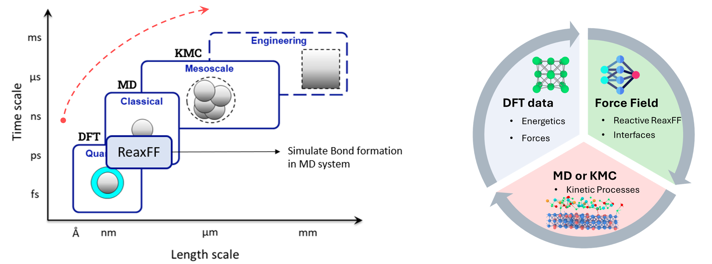
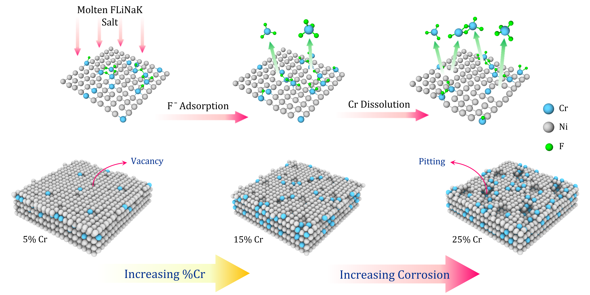
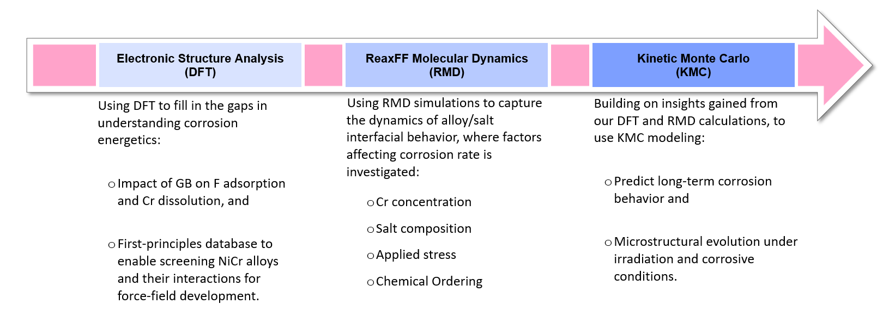

Research Projects
Multiscale Modeling for the Extreme
A central goal of my research is to build computational frameworks that connect atomic-scale chemistry with mesoscale and engineering-scale behavior in extreme environments. In nuclear systems, materials are exposed to high temperature, complex chemistry, irradiation, and evolving interfaces, making their behavior difficult to capture using a single modeling method.
Reactive force fields, such as ReaxFF and emerging reactive machine-learning interatomic potentials, are essential because they bridge first-principles accuracy and large-scale atomistic simulation. These approaches enable molecular dynamics simulations of chemically reactive systems, allowing us to study kinetics, identify driving factors, and discover atomistic mechanisms that control long-term performance.

Molten Salt Corrosion of Ni-Based Alloys
My Ph.D. research focused on molten salt corrosion in Ni-based structural alloys through a multiscale workflow that links DFT, reactive force-field development, reactive molecular dynamics, and kinetic Monte Carlo modeling. This framework connects fundamental energetics to dynamic interfacial behavior and longer-time corrosion evolution.
At the atomic scale, corrosion begins with adsorption of F− ions onto the alloy surface, especially near Cr atoms. Strong F–Cr bonding weakens local Ni–Cr bonding and promotes selective Cr dissolution into the molten salt, driving vacancy formation, surface evolution, and early corrosion damage.

Together, these models reveal how alloy chemistry, local structure, and reactive molten salt environments control corrosion pathways in advanced reactor materials.

GEN IV Research Competition Video
This short video presents part of my research vision and summarizes the broader motivation behind my work in advanced nuclear materials.
Engineering-Scale Modeling for Fusion
My future research direction extends this multiscale background toward fusion systems and engineering-scale modeling. Stay tuned for future work connecting atomistic insight with multiphysics and finite element simulations using tools such as MOOSE.